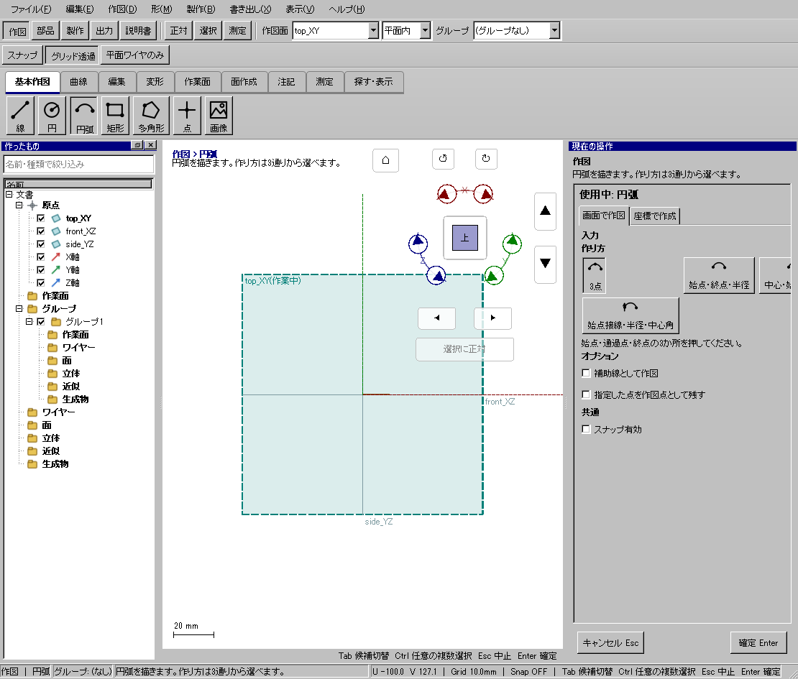

上側の半円アーチを作る
使う機能：円弧
3点方式では始点・通過点・終点の順です。中心方式は中心と始点、終点方向を指定します。作り方で点の意味が違います。
半径10mmの上半円弧ができる。
1 準備 — 元の図形から作る
top_XYに正対する。
まだ用意できていなければ、次の手順を先に行ってください。既にモデルがある場合も、例の座標・大きさ・面の向きを自分のモデルへ読み替えます。
- 指定座標の直線・円・円弧を準備する — 図形の作成から順に練習できます。
練習前にKCD2を別名保存します。数値の長さはmm、角度は度です。平面内のu/vと世界XYZを区別します。
2 使う道具を開く — 押す場所
- 作図 → 基本作図 → 円弧
別の入口：Ctrl+K → 円弧を検索 → 候補の用途を確認して開きます。別モードなら「全モードから探す」をオンにします。

3 操作手順 — 一つずつ進める
1 円弧を選び3点の作り方にする
この段階で確認：この操作で使う入力：top_XYに正対する
2 (-10,0),(0,10),(10,0)の順に置く
この段階で確認：半径10mmの上半円弧ができる。
4 設定する欄と数値
ボタン名・欄名と、今回使う値を対応させてください。項目が出ていない場合は作り方・モードが合っているか確認し、ペイン内をスクロールします。
| 見る欄・役割 | この例の設定と意味 |
|---|---|
| 3点 | (−10,0),(0,10),(10,0) |
| 期待半径 | 10mm |
選択の確認：役割欄の名前と3Dの強調を照合します。重なって拾いにくい時はTabで候補を替えます。全体を使う例では左一覧の要素名を選び、3Dの1辺選択と区別します。

この実画面は既存操作試験の一場面で、下の数値例の完成画像とは限りません。設定・選択の操作画面。具体的な完成例は段階写真のある作業例を参照してください。
5 確定して結果を確認
最後の点や配置位置を指定した時点で、この1回の操作が完了します。数値欄を入力するEnterと、形を完成させる操作を画面下の案内で区別します。
半径10mmの上半円弧ができる。
形を作る操作では、元と結果の名前を分けて一覧で確認し、必要に応じて元を一時非表示にします。表示だけの機能では形状や要素数を変えることが目的ではありません。
6 取消・やり直し・保存
入力をやめる時はEscを使います。作図で直前の点を戻す場合は、画面の案内に従ってBackspaceを使います。確定後の図面変更はCtrl+Zです。
モデルの編集正本はKCD2、説明書の編集正本はKCIです。外部へ出力するだけの機能では、出力ファイルと編集元を両方残してください。
進めない場合 — 症状から戻る場所を探す
| 起きていること | 確認して直す場所 |
|---|---|
| 下半分になった | 通過点と順序を確認 |
| 作れない | 3点が同じ直線になっていないか確認 |
この機能の入力条件：円弧を描きます。作り方は3通りから選べます。
計算中は処理表示を見ます。失敗が出たら、対象・入力条件を変えずに何度も押すのでなく、案内にある対象と条件を確認します。
別の方式・条件で使う
3点
まず主手順で入力の役割を確認し、この例の値と操作へ置き換えます。
この例の準備：top_XY
始点・通過点・終点の順に指定します。−5,0→0,5→5,0なら上半円です。反対側の点を通過点にすれば下側になることを比べます。
- 始点(-5,0)
- 通過点(0,5)
- 終点(5,0)
結果の見分け方：上半分の半円弧
この実画面は既存操作試験の一場面で、下の数値例の完成画像とは限りません。方式間で共通の入力欄を確認する参考画面です。この方式・上記の数値で確定した結果の画像ではありません。
始点・終点・半径
まず主手順で入力の役割を確認し、この例の値と操作へ置き換えます。
この例の準備：top_XY
最後の点を置く前に半径5mmと側・反転を設定します。端点間の距離が直径より大きいとR5では届きません。例の8mm弦はR5以内です。
- 半径5mm・側を先に設定
- 始点(-4,0)
- 終点(4,0)
結果の見分け方：両端を結ぶR5円弧
この実画面は既存操作試験の一場面で、下の数値例の完成画像とは限りません。方式間で共通の入力欄を確認する参考画面です。この方式・上記の数値で確定した結果の画像ではありません。
中心・始点・終点
まず主手順で入力の役割を確認し、この例の値と操作へ置き換えます。
この例の準備：top_XY
中心0,0→始点5,0→終点方向0,5です。終点は方向として使い、中心から半径5mmの位置へそろえます。反時計回りの向きに注意します。
- 中心(0,0)
- 始点(5,0)
- 終点(0,5)
結果の見分け方：90度の円弧
この実画面は既存操作試験の一場面で、下の数値例の完成画像とは限りません。方式間で共通の入力欄を確認する参考画面です。この方式・上記の数値で確定した結果の画像ではありません。
始点接線・半径・中心角
まず主手順で入力の役割を確認し、この例の値と操作へ置き換えます。
この例の準備：top_XY
始点を置く前後の案内を見て、最後の点より前に半径5・中心角90を設定します。接線方向を示す点は円弧の終点そのものではありません。
- 半径5mm・中心角90度を設定
- 始点
- 接線の向きを指定
結果の見分け方：指定接線で始まる円弧
この実画面は既存操作試験の一場面で、下の数値例の完成画像とは限りません。方式間で共通の入力欄を確認する参考画面です。この方式・上記の数値で確定した結果の画像ではありません。
参考画面の出典と確認範囲
試験名：HP-RS-01 5 つの撮影の場面が作れる。試験全体の結果：passed。画像はコマンド呼出し直後で、入力待ち・下見の場合もあります。各段階の完成証拠ではありません。